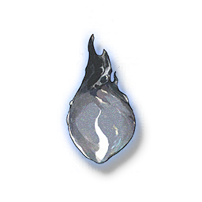

Extracted Phlogiston
Development Materials

Medium material for weapon breakthrough and skill upgrade for characters using Pistols.
A crystal that looks like a solidified candle flame, the impurities are reduced a lot after coarse extraction and recrystallization. Even non-professionals can distinguish the difference between different grades.